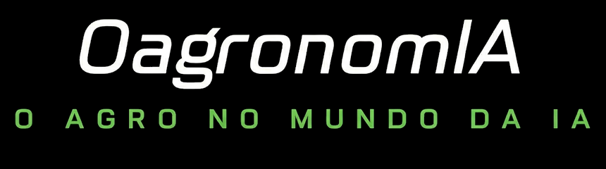

SESSAO_EXECUTIVA // 60 MIN // SEMIESTRUTURADA // CONFIDENCIAL
Benchmark de IA · Sessões executivas
Roteiro de entrevista
com executivos
Conversa semiestruturada com executivos e lideranças técnicas de grandes empresas do agro, bioenergia, florestal e setores correlatos: como a IA virou diferencial estratégico, o que já gera valor e para onde o setor vai.
Uso interno do entrevistador
Não compartilhe este documento com o entrevistado: ele identifica o contratante. Para mostrar a régua de maturidade na pergunta 1, use o anexo da última página.
Contratante
Acelen Energia Renovável
Documento
Roteiro das sessões executivas — Benchmarking de uso de IA
Nº / Revisão
BIA-ACL-SE-01 · Rev. 00
Responsáveis
Dr. Guilherme M. Sanches · Rafael Rotiroti — OagronomIA
Data
Outubro de 2026
Uso interno
Estrutura da sessão
60 minutos em três blocos
05–55
Perguntas · 10 blocos de ~5 min
Abertura · 5 min
O estudo
Benchmark de mercado sobre como empresas líderes adotam IA como diferencial estratégico, feito para uma empresa do setor de bioenergia.
Confidencialidade
Nem o seu nome nem o da sua empresa aparecem em nenhum material. O que você disser entra no estudo de forma agregada e anônima.
Gravação
Pedir autorização para gravar, só para a transcrição interna. A gravação é apagada depois do registro; o que entra no projeto é anonimizado.
Tom
Conversa estratégica. Sem ferramentas específicas, números confidenciais ou detalhes internos que não possam ser compartilhados.
Mapa das perguntas
| Tema | Frente 1
Benchmark | Frente 2
Maturidade | Frente 3
Tendências | Núcleo |
|---|
| 01 | Trajetória e estágio atual | | | | Núcleo |
| 02 | Valor real | | | | Núcleo |
| 03 | O que não deu certo | | | | Núcleo |
| 04 | Alicerces e sequência | | | | Núcleo |
| 05 | Governança e riscos | | | | |
| 06 | Organização e pessoas | | | | |
| 07 | IA generativa e agentes | | | | |
| 08 | Campo e sistemas autônomos | | | | Núcleo |
| 09 | Dados, parceiros e soberania | | | | |
| 10 | Futuro e conselho | | | | |
Se o tempo apertar, garanta as cinco perguntas do núcleo.
Uso interno
Perguntas 01–04
O que já aconteceu
01Trajetória e estágio atual
Frente 1Frente 2Núcleo
Como a IA evoluiu na sua empresa nos últimos anos, e onde vocês estão hoje nessa jornada?
Aprofundar
- Qual foi o ponto de virada em que a IA deixou de ser experimento e passou a ser pauta estratégica? Quem patrocinou?
- Mostrar a régua de 5 estágios (anexo). Onde você colocaria a empresa? Qual iniciativa comprova esse estágio?
- Em qual dimensão vocês estão mais atrás: governança, dados, organização ou aplicações?
02Valor real
Frente 1Núcleo
Quais iniciativas de IA geram valor mensurável hoje, e como vocês medem esse valor?
Aprofundar
- De cada 10 pilotos, quantos chegam à produção?
- Existe um método formal de ROI? Quem valida o resultado: o negócio ou a TI?
- O que diferencia um piloto que escala de um que morre?
- Onde o valor apareceu primeiro: no campo, na indústria, na logística ou no corporativo?
03O que não deu certo
Frente 1Núcleo
Você pode contar um caso de IA que não funcionou? O que falhou e o que vocês aprenderam?
Aprofundar
- A causa principal estava em dados, infraestrutura, governança, pessoas, fornecedor ou expectativa?
- O que fariam diferente hoje?
04Alicerces e sequência
Frente 2Núcleo
O que precisou estar pronto antes de a IA gerar resultado? Se começasse do zero, o que faria primeiro?
Aprofundar
- Qual pré-requisito foi subestimado? Por exemplo: qualidade de dados, conectividade no campo, integração de sistemas.
- A sequência seguida foi planejada ou descoberta no caminho?
- Quanto tempo levou cada etapa: da base de dados e da conectividade ao primeiro caso em produção, e dele à escala?
Uso interno
Perguntas 05–07
Como a empresa se organiza
05Governança e riscos
Frente 1Frente 2
Como a IA é governada na empresa: quem decide o que entra, quem responde pelos riscos e como vocês lidam com o uso não oficial pelas equipes?
Aprofundar
- Existe comitê, política ou área dona do tema? A quem ela se reporta?
- Como tratam segurança da informação e dados sensíveis no uso de IA?
- A governança acelera ou freia?
06Organização e pessoas
Frente 1Frente 3
Que estruturas, papéis e competências vocês criaram ou mudaram por causa da IA?
Aprofundar
- Vocês têm uma área de IA? Onde ela fica no organograma: TI, Estratégia, negócio ou diretoria própria? Por quê?
- Centro de excelência, times de dados dentro do negócio, novos cargos? Em ordem de grandeza, quantas pessoas trabalham com dados e IA?
- Qual perfil profissional mais falta? Onde a cultura mais resistiu?
- Como imagina essas estruturas daqui a 3 a 5 anos?
07IA generativa e agentes
Frente 2Frente 3
Onde a IA generativa (assistentes, copilotos, agentes) já mudou o jeito de trabalhar, e onde ainda é promessa?
Aprofundar
- O uso é individual ou já está integrado a processos?
- Vocês já têm agentes executando tarefas com autonomia? Com que supervisão?
- Ela já apoia decisões estratégicas ou fica na produtividade?
Uso interno
Perguntas 08–10
Para onde o setor vai
08Campo e sistemas autônomos
Frente 3Núcleo
No campo, quais tecnologias estão de fato mudando a operação, e o que você espera para os próximos anos diante da escassez de mão de obra?
Aprofundar
- Em quais estágios estão satélite e sensoriamento remoto, visão computacional, drones, robótica e máquinas autônomas?
- O que muda para culturas de colheita ainda manual, como citros, café ou palma?
- Robôs humanoides estão no radar de vocês, no campo ou na indústria?
- Alguma referência internacional chama sua atenção, como China, EUA ou Austrália?
09Dados, parceiros e soberania
Frente 3
Como vocês equilibram capacidade própria e dependência de fornecedores e parceiros de tecnologia, e quem é o dono dos dados?
Aprofundar
- Existe preocupação com dependência de fornecedor, dados de máquinas ou dados em plataformas de terceiros?
- Onde roda a IA generativa de vocês: ferramenta de mercado, nuvem privada ou servidor próprio? Os dados saem de casa para serem processados? O que pesou nessa escolha?
- Parcerias, investimentos em startups ou aquisições fazem parte da estratégia?
10Futuro e conselho
Frente 2Frente 3
Olhando para 2030, o que vai separar as empresas do agro que capturaram valor com IA das que ficaram para trás?
Aprofundar
- Se você fosse aconselhar uma empresa de bioenergia que está estruturando sua estratégia de IA agora, por onde começaria?
- E o que ela deveria evitar?
Uso interno
Encerramento e condução
Feche bem e peça evidência
Encerramento · 5 min
- Há algo importante que não perguntamos?
- Existe algum material público (relatório, apresentação, entrevista) que você recomende para o estudo?
- Reforçar a confidencialidade e agradecer.
Declarado × real
Dizem ter IA na agenda de 2026
78%
Pesquisa pré-evento, 84 respondentes do agro
×
Testes que viram projetos com retorno
5em 100
Especialista em painel do mesmo evento
Fonte: Gatua Meeting E01 — TI do Futuro (maio de 2026). O setor se vê mais maduro do que está: quando o entrevistado citar estágio ou resultado, pergunte qual iniciativa mostra isso.
Como conduzir
Peça evidência, não só opinião
Todo estágio ou resultado declarado precisa de um exemplo concreto.
Mantenha o nível macro
Se a conversa entrar em marcas ou ferramentas, traga de volta para a lógica da decisão.
Proteja o contratante
Não cite a macaúba nem detalhes que identifiquem o cliente. Use sempre "empresa de bioenergia".
Registre logo depois
Em registros-anonimizados/Sessao-NN.md, sem nomes de pessoas nem de empresas.
Registro pós-sessão
- Perfil genérico do entrevistado e setor (ex.: diretor de tecnologia, grande grupo sucroenergético).
- Estágio autodeclarado (1–5) e a evidência citada.
- Principais insights por pergunta e citações anonimizadas.
- Implicações para cada uma das três frentes.
- Apagar a gravação e a transcrição brutas depois do registro. Elas não vão para o SharePoint da Acelen nem para o pacote final do projeto: só o registro anonimizado.
Anexo
Régua de maturidade em IA
Cinco estágios de maturidade
Onde você posicionaria a sua empresa hoje?
1
Exploração
Uso individual e informal de IA; dados fragmentados em planilhas e silos.
2
Pilotos
Provas de conceito com escopo e métrica; primeiros dados organizados.
3
Operacionalização
Primeiro caso em produção; plataforma de dados unificada; governança formal.
4
Escala
IA embutida nos processos-chave; dados como produto; centro de excelência.
5
Transformação
IA no modelo de negócio; agentes autônomos com supervisão por exceção.
Quatro dimensões
Governança
Quem decide, política e gestão de riscos.
Dados
Qualidade, integração e plataforma.
Organização
Estruturas, papéis e competências.
Aplicações
Do apoio à decisão ao campo autônomo.
Síntese OagronomIA de frameworks de mercado (Gartner, MIT/BCG, McKinsey, Microsoft, IBM, Google).